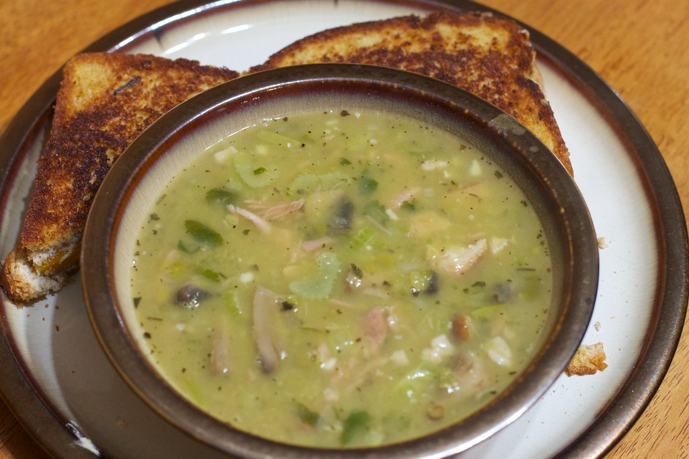

Slow Cooker Split Pea Soup

Do you ever crave something warm and hearty on those colder days? Well this recipe will do the trick. It is tasty, hearty and able to warm up those bones. Not to mention that this is all done in a crockpot so putting it together is super easy.
Ingredients
Serving size = 8 Servings
- 1 lb. bag of green split peas, rinsed well and drained
- 1 cup carrots - diced
- 2 ribs of celery
- 1 tbsp minced garlic
- 1/3 cup chopped fresh italian parsley
- 1 tbsp fresh thyme
- 1 tsp salt
- ground pepper
- 1 hambone optional>
- 6 cups low sodium chicken broth. Add more if needed
Instructions
- Layer the ingredients, through the ham bone, in a slow cooker in the order listed. Add as much of the chicken broth as needed to just cover the ingredients, about 4 to 5 cups. Reserve the remaining chicken broth for later.
- Cover and cook on LOW for 6 to 8 hours. Stir occasionally during the cooking time and add additional broth only if the level drops below the ingredients.
- When the peas are tender, remove the ham bone and transfer it to a cutting board. Pull off any remaining ham, tear it into small pieces, and return it to the slow cooker. Discard the ham bone and bay leaf. Use a spoon to lightly mash some of the peas against the side of the slow cooker and stir until nice and creamy, adding more broth, if needed, to reach desired consistency. Taste and season with additional salt and pepper, as needed.
Back to Home